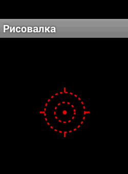

/* Моя кошка замечательно разбирается в программировании. Стоит мне объяснить проблему ей - и все становится ясно. */
John Robbins, Debugging Applications, Microsoft Press, 2000

/* Моя кошка замечательно разбирается в программировании. Стоит мне объяснить проблему ей - и все становится ясно. */
John Robbins, Debugging Applications, Microsoft Press, 2000
Класс Color
Класс Paint
Класс Canvas
Класс Bitmap
Пакет android.graphics имеет все необходимые библиотеки для работы с двухмерной графикой. Существует несколько подходов для рисования графики.
Для рисования простой графики, которая не будет динамически изменяться во время работы приложения, обычно используют класс, наследующий от View и задействуют метод onDraw().
В метод передается объект Canvas, у которого есть различные графические методы.
Стандартная реализация подобного подхода выглядит следующим образом:
public class ViewGraphicsActivity extends Activity {
@Override
public void onCreate(Bundle savedInstanceState) {
super.onCreate(savedInstanceState);
requestWindowFeature(Window.FEATURE_NO_TITLE);
setContentView(new MyView(this));
}
}
Необязательный вызов метода requestWindowFeature(Window.FEATURE_NO_TITLE) используется для создания экрана активности без заголовка. В методе setContentView() вместо ссылки на разметку передаётся класс MyView, наследующий от View:
class MyView extends View {
public MyView(Context context) {
super(context);
}
@Override
public void onDraw(Canvas canvas) {
}
}
В методе onDraw() можете рисовать:
Paint paint = new Paint();
paint.setColor(Color.WHITE);
paint.setTextSize(20);
paint.setAntiAlias(true);
canvas.drawColor(Color.BLUE);
canvas.drawText("Hello Kitty", 10, 20, paint);
Bitmap image = BitmapFactory.decodeResource(getResources(), R.drawable.ic_launcher);
canvas.drawBitmap(image, 40, 80, null);
Для рисования динамической графики больше подойдёт класс SurfaceView, имеющий дополнительные возможности. Данному классу мы посвятим отдельный материал.
Класс Color отвечает за цвета. Цвета можно описывать четырьмя числами в формате ARGB, по одному для каждого канала(Alpha, Red, Green, Blue).
Подробнее про класс Color
Класс Paint содержит стили, цвета и другую графическую информацию для рисования графических объектов. Он позволяет выбирать способ отображения графических примитивов, которые вы рисуете на объекте Canvas с помощью методов. Изменяя объект Paint, можно контролировать цвет, стиль, шрифт и специальные эффекты, используемые при рисовании. Например, чтобы установить сплошной цвет для рисования линии, нужно вызвать метод Paint.setColor().
mPaint.setColor(COLOR.BLUE);
Метод setColor() позволяет выбрать цвет кисти, стиль объекта Paint (задаваемый с помощью метода setStyle) — рисовать либо очертания графического примитива (STROKE), либо его заливку (FILL), либо и то, и другое сразу (STROKE_AND_FILL).
Помимо этих простых методов класс Paint поддерживает прозрачность и может быть изменён с помощью различных шейдеров, фильтров и эффектов, предоставляет богатый набор сложных красок и кистей.
Графику в приложении можно создавать двумя способами:
Рисование графики в объекте View используется в том случае, если требуется нарисовать простую графику, которая не будет динамически изменяться в процессе работы приложения, и не является реализацией сложной графической игры. Смотри пример Работаем с графикой - Простая рисовалка
Любой цвет в Android содержит свойство прозрачности (альфа-канал). Указать его можно при создании описывающей цвет переменной, используя методы argb() и parseColor():
// Делаем цвет красным и наполовину прозрачным
int opacity = 127;
int intColor = Color.argb(opacity, 255, 0, 0);
int parsedColor = Color.parseColor("#7FFF0000");
Но мы можем задать прозрачность уже существующего объекта Paint с помощью метода setAlpha():
int opacity = 127;
myPaint.setAlpha(opacity);
Пример использования метода setAlpha() для наложения двух картинок.
Изменение режима Xfermode для объекта Paint влияет на способ наложения новых цветов поверх уже нарисованных. В обычных обстоятельствах при рисовании поверх имеющегося рисунка создастся новый верхний слой. Если новый объект Paint на 100% непрозрачный, он полностью закрасит все, что находится под областью для рисования; если он полупрозрачный, то только затенит лежащие ниже цвета. Подклассы Xfermode позволяют изменить такое поведение.
Для того чтобы применить один из этих режимов, используйте метод setXferMode():
AvoidXfermode avoid = new AvoidXfermode(Color.BLUE, 10, AvoidXfermode.Mode.AVOID);
borderPen.setXfermode(avoid);
При создании нового объекта Paint вы можете передать в его конструктор несколько флагов, которые будут влиять на способ отображения. Одним из наиболее интересных из них считается флаг ANTI_ALIAS_FLAG, обеспечивающий сглаживание диагональных линий, рисуемых объектом Paint (снижая при этом производительность).
Сглаживание играет важную роль в процессе отрисовки текста, значительно упрощает его восприятие. Чтобы сделать текст еще более гладким, можете использовать флаг SUBPIXEL_TEXT_FLAG, который применяет субпиксельное сглаживание. Можно задать оба этих флага вручную, используя методы setSubpixelText() и setAntiAlias():
myPaint.setSubpixelText(true);
myPaint.setAntiAlias(true);
Можно рисовать не сплошными линиями, а пунктиром. Для этого есть класс DashPathEffect:
package ru.alexanderklimov.simplepaint;
import android.content.Context;
import android.graphics.Canvas;
import android.graphics.DashPathEffect;
import android.graphics.Paint;
import android.graphics.Paint.Style;
import android.view.View;
public class Draw2D extends View {
Context mContext;
Paint linePaint;
Paint dotPaint;
Paint linePaint1;
DashPathEffect dashPath;
public Draw2D(Context context) {
super(context);
mContext = context;
dashPath = new DashPathEffect(new float[] { 5, 5 }, 1);
linePaint = new Paint();
linePaint.setAntiAlias(true);
linePaint.setARGB(255, 255, 0, 0);
linePaint.setPathEffect(dashPath);
linePaint.setStyle(Style.STROKE);
linePaint.setStrokeWidth(3.0f);
dotPaint = new Paint();
dotPaint.setAntiAlias(true);
dotPaint.setARGB(255, 255, 0, 0);
dotPaint.setStyle(Style.FILL);
linePaint1 = new Paint();
linePaint1.setAntiAlias(true);
linePaint1.setARGB(255, 255, 0, 0);
linePaint1.setStrokeWidth(3.0f);
}
@Override
protected void onDraw(Canvas canvas) {
super.onDraw(canvas);
canvas.drawCircle(130, 150, 40, linePaint);
canvas.drawCircle(130, 150, 20, linePaint);
canvas.drawCircle(130, 150, 4, dotPaint);
canvas.drawLine(130, 110, 130, 100, linePaint1);
canvas.drawLine(130, 190, 130, 200, linePaint1);
canvas.drawLine(170, 150, 180, 150, linePaint1);
canvas.drawLine(90, 150, 80, 150, linePaint1);
}
}

Метод setShadowLayer() класса Paint
Класс Canvas представляет собой специальную поверхность (холст), на которой вы можете рисовать. С помощью многочисленных методов класса вы можете рисовать линии, окружности, дуги и так далее.
В Android экран захватывается активностью, которая содержит окно просмотра View, которое в свою очередь содержит холст Canvas. Вы можете рисовать на холсте, переопределяя метод View.OnDraw() (мы уже разбирали этот момент выше).
public class GraphicsDemo extends Activity {
@Override
public void OnCreate(Bundle savedInstanceState) {
super.onCreate(savedInstanceState);
setContentView(new GraphicsView(this));
}
static public class GraphicsView extends View {
public GraphicsView(Context context) {
super(context);
}
@Override
protected void onDraw(Canvas canvas) {
// ваши команды для рисования
}
}
}
Рисование на холсте (Canvas) лучше всего использовать, когда окно приложения должно регулярно себя перерисовывать во время работы. Например, при разработке игр необходимо создавать постоянно меняющуюся графику. Учтите, что динамическое рисование на холсте — процесс довольно медленный. Всего существует два способа реализации рисования на холсте:
Класс Canvas имеет собственный набор методов для рисования: drawBitmap(), drawRect(), drawText() и другие. Некоторые классы также имеют методы draw(). Например, можно создать объекты Drawable и передать их для прорисовки на холст. Класс Drawable имеет собственный метод draw(), который принимает объект Canvas как параметр.
Холст - это поверхность, на которой рисуется ваша графика. Когда вы выполняете прорисовку в пределах метода обратного вызова View.onDraw(), система передает в качестве параметра объект Canvas. Вы можете также получить объект Canvas вызовом метода SurfaceHolder.lockCanvas(), если имеете дело с объектом SurfaceView.
Система вызывает метод onDraw() по мере необходимости. Каждый раз, когда ваше изображение на холсте требует перерисовки, необходимо вызывать метод invalidate(). Он требует от системы обновления представления, и система тогда вызовет ваш метод onDraw(). Поскольку ShapeDrawable имеет свой собственный метод draw(), вы можете создать подкласс View, который рисует ShapeDrawable в коде метода обратного вызова view.onDraw().
Класс Bitmap отвечает за растровые картинки.